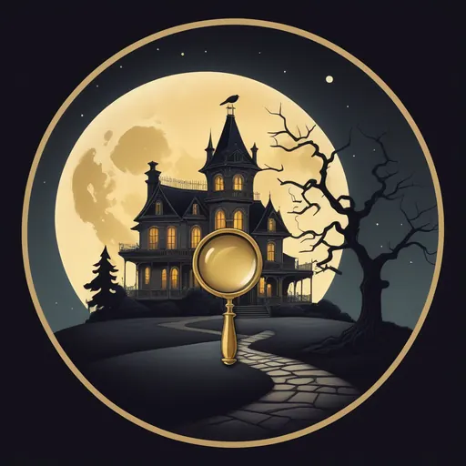

← ゲーム一覧へ戻る

🔍
ナゾトキ探偵 ∞
奇妙な洋館に招かれた探偵。扉の向こうで、事件が起きる。
🏰 嵐の書斎
🏫 放課後の扉
🌳 絵本の扉
🌃 ネオンの扉
▶ つづきから
👥 みんなで遊ぶ（犯人はだれだ？）
オンラインで最大8人。だれか1人がこっそり犯人。CPUも入れられる
― ひとりで遊ぶ ―
かんたん
容疑者4人
場所4・時間3
ふつう
容疑者5人
場所5・時間3
むずかしい
容疑者6人
場所6・時間4
事件番号で遊ぶ
かんたん
ふつう
むずかしい
さがす
？ あそびかた
⌂
🔍
調べる
🗣️
聞きこみ
📒
手帳
☝️
指名
← もどる
👥
犯人はだれだ？
プレイヤーの中に、犯人がひとり。
名前
部屋をつくる
入る
🤖 CPUと練習（通信なし）
あそびかた
① みんなが容疑者になる。役わりカードで、自分が
探偵
か
犯人
かがわかる（犯人は1人）。
② 証言は自動で本当のことになる。
犯人だけ
、事件の時間にどこにいたかウソをつく。
③ 「だれが いつ どこに」の表と、現場の証拠、
自分だけのヒント
をもとに話し合う。食いちがう証言は「つきつける」。
④ 投票で一番票を集めた人が捕まる。犯人なら探偵の勝ち、ちがえば犯人の逃げきり！